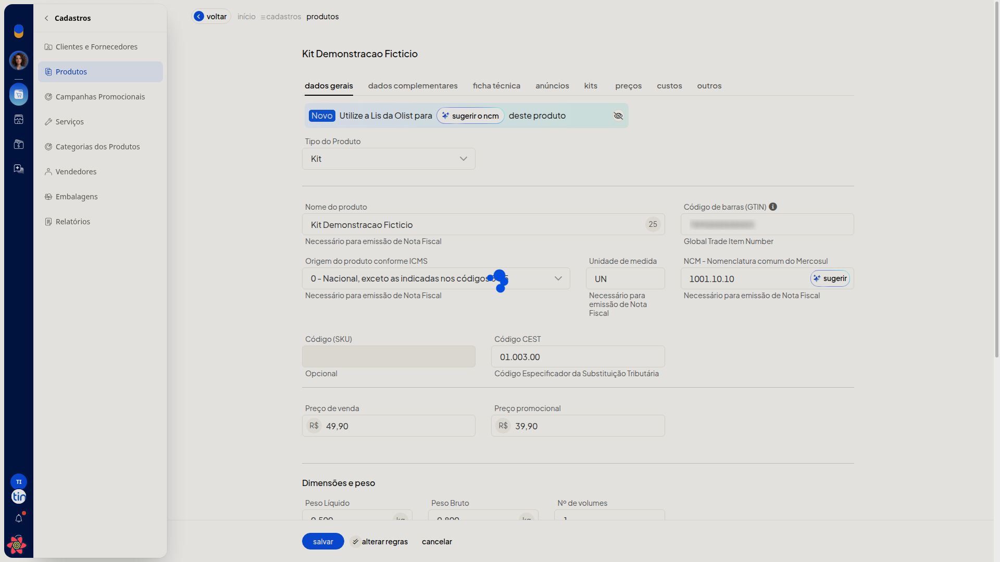
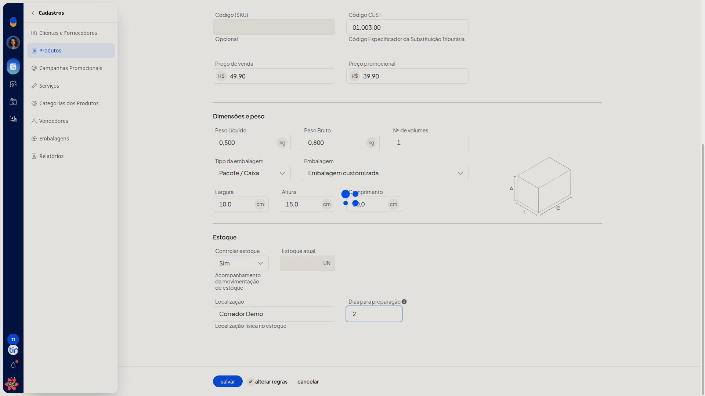
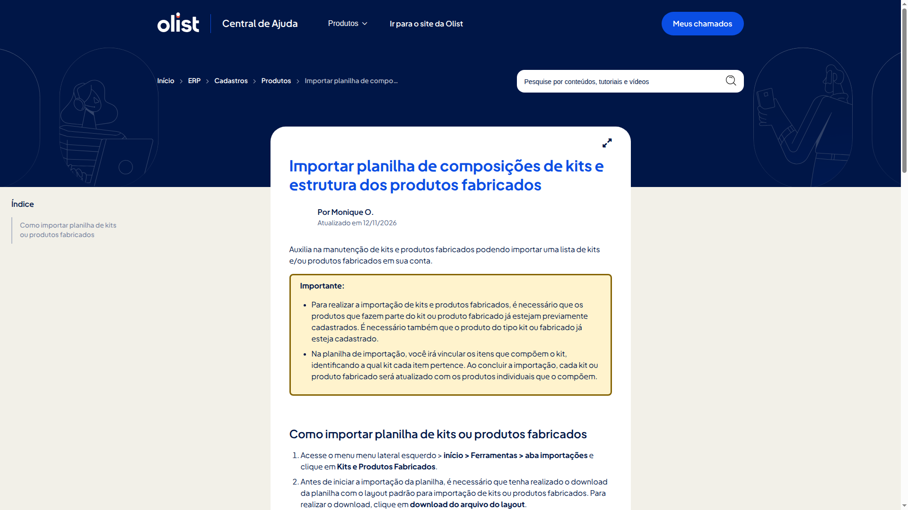
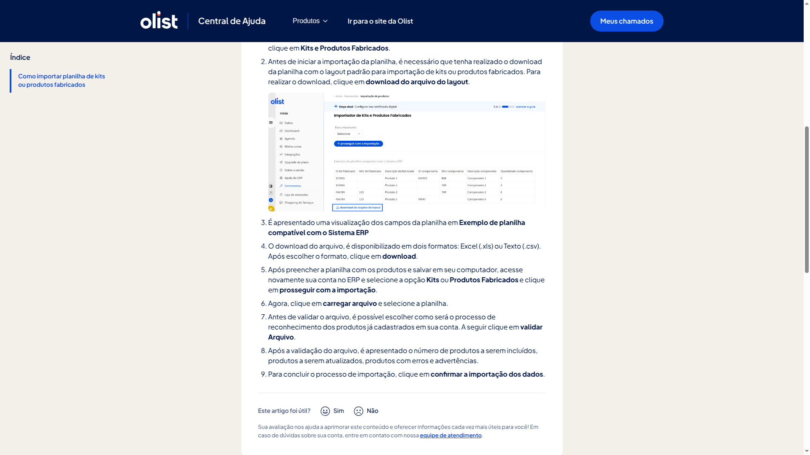

Calcular o saldo do kit pelos componentes sem usar a multiempresa
O saldo do kit é calculado pelo menor saldo entre os componentes. Esse cálculo é o padrão e não exige ativar a multiempresa. Vender um componente baixa o saldo disponível do kit automaticamente.
A ficha do kit e a planilha de composição não têm um campo para ligar ou desligar esse cálculo. Você cadastra o kit, informa o estoque do próprio kit e vincula os componentes pela aba Kits ou pela planilha de composição.
Importante
- Para importar a composição, o produto do tipo kit ou fabricado e os componentes já precisam estar cadastrados.
Instruções
Pela tela do kit
-
Na listagem de produtos, clique em Incluir produto.
-
Em Tipo do Produto, selecione Kit.

-
Na seção Estoque de Dados Gerais, informe o estoque do próprio kit.
-
Controlar estoque: não obrigatório. Selecione Sim ou Não.
-
Estoque atual: não obrigatório.
-
Localização: não obrigatório.
-
Dias para preparação: não obrigatório. Informe um número inteiro de dias.

- Na aba Kits, informe cada componente.
- Produto ou SKU: não obrigatório. Use um produto já cadastrado. Um código inexistente exibe Produto não encontrado no sistema.
- Quantidade: não obrigatório. Informe a quantidade e a unidade, por exemplo 1 UN.
- Clique em Salvar.
Por planilha de composição
-
No menu lateral esquerdo, acesse início > Ferramentas > aba importações e clique em Kits e Produtos Fabricados.

-
Baixe o layout padrão em Excel (.xls) ou texto (.csv).
-
Na planilha de produtos, informe a letra K na coluna Tipo de Produto para cada item vendido como kit. A letra K é obrigatória. A composição vai em planilha separada.
-
Na planilha de composição, preencha as colunas abaixo. Nenhuma é obrigatória. Essa planilha vincula os produtos que compõem cada kit e a quantidade de cada um.
-
ID kit/fabricado
-
SKU kit/fabricado
-
Descrição kit/fabricado
-
ID componente
-
SKU componente: o componente precisa já estar cadastrado
-
Descrição componente
-
Quantidade componente

Informações adicionais
Criação e atualização do kit por canal
- Interface/Tela: criar sim, atualizar sim
- Lote (Planilha): criar não, atualizar sim
- API V3: criar não, atualizar sim
- Lis: criar não, atualizar sim